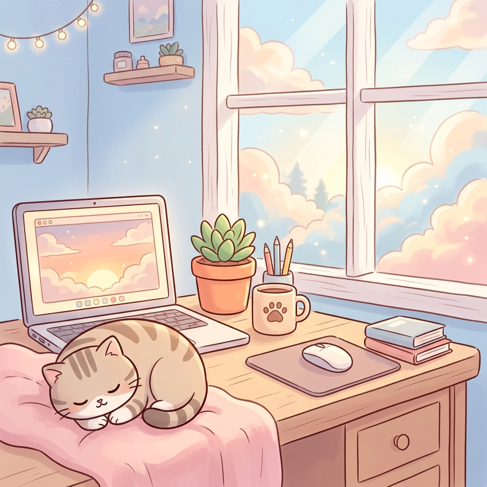
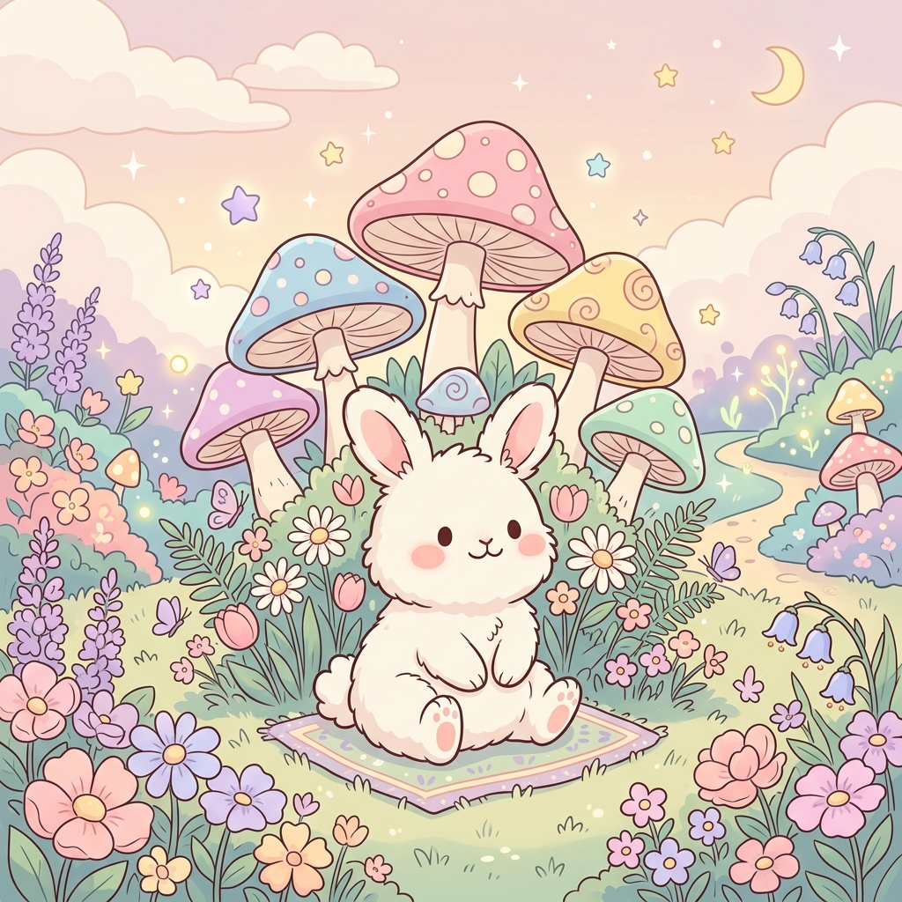

🧪
🎨

懒懒猫咪 🐱

粉黛兔兔 🐰
捕星小熊 🐻
🧪
快速测试模式已开启：
番茄钟缩短为 10秒，休息缩短为 3秒。
关闭
轻重缓急：
🔴 紧急且重要 (立即做)
🟡 重要但不紧急 (计划做)
🔵 紧急但不重要 (授权做)
🟢 不紧急不重要 (暂缓做)
预计番茄：
🍅
🍅
🍅
🍅
🍅
🔴 紧急重要
0
🟡 重要非紧急
0
🔵 紧急非重要
0
🟢 随缘放置
0
✅ 已完成
0
✕
✨ 正在专注中 ✨
任务名称
25:00
Focus
🎉
专注时间结束啦！
做得非常好，你刚才完成了这一个番茄钟：
写写日记
这个任务已经顺利完成了么？
完成了！✨
未完成，下个继续 🍅